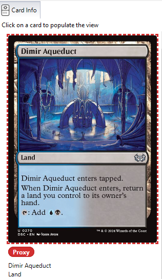
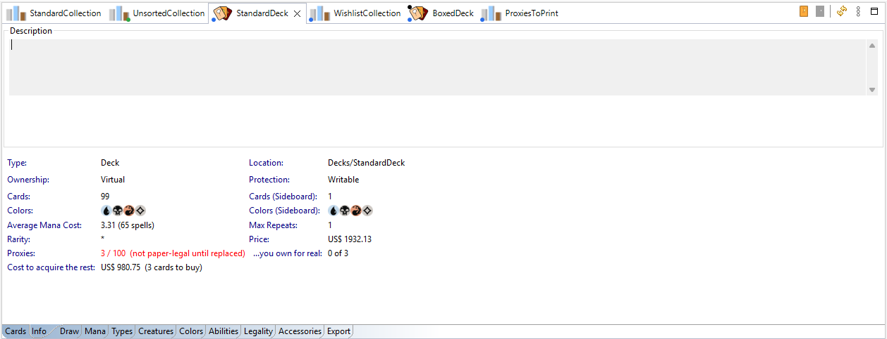
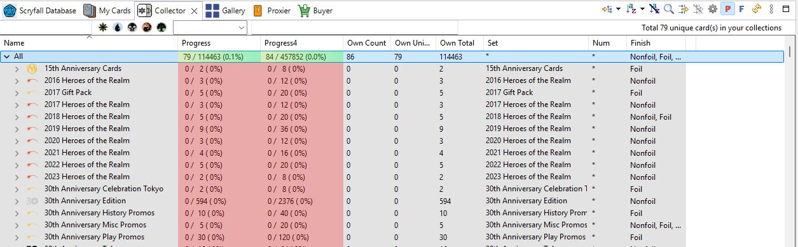

A proxy is a stand-in for a card: a printed copy you play with while you don't have (or don't want to sleeve) the real one. ManaDesk lets you mark any copy as a proxy, so you always know what is genuine and what isn't.
A proxy is still a card you own: keep it in a Standard collection, like the genuine ones.
Proxies show a red Proxy badge on the card image (Card Info, Gallery), and Proxy in the Proxy column. Use the filter dialog's Proxy group to show only proxies, or only genuine cards.



The Proxier works out which proxies your decks still need, and can create a Wishlist/To Print collection with them, already marked as proxies. When they are printed, move them to a Standard collection: they become owned proxies (see Wishlists and to-print lists).
Export the cards (a deck, or your to-print collection) with the Print Proxies HTML Mobile format: it makes a page of card images, ready to print from your browser (adjust the print scale to get 9 cards per Letter sheet). See Printing proxies.